전기기능장 (2010-03-28 기출문제)
1과목: 임의구분
1. 314H의 자기 인덕턴스에 220[V], 60[㎐]의 교류 전압을 가하였을 때 흐르는 전류는?
- 약 1.9×10-3[A]
- 약 1.9×[A]
- 약 11.7×10-3[A]
- 약 11.7[A]
(정답률: 82%)

2. 역률을 항상 1로 운전할 수 있는 전동기는?
- 단상 유도전동기
- 3상 유도전동기
- 동기전동기
- 3상 권선형 유도전동기
(정답률: 87%)
3. 그림은 어떤 플립플롭의 타임차트이다. (A), (B)에 해당 되는 것은?
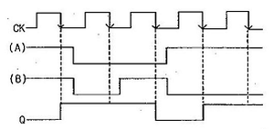
- (A) : S, (B) : R
- (A) : R, (B) : S
- (A) : J, (B) : K
- (A) : K, (B) : J
(정답률: 81%)
4. 유효 전력 15kW, 무효 전력 12.5kVar를 소비하는 3상평형 부하에 3.5kVA의 전력용 콘덴서를 접속하면 접속후의 피상전력은?
- 약 9.7[KVA]
- 약 1.26[KVA]
- 약 17.5[KVA]
- 약 27.1[KVA]
(정답률: 63%)
5. 철근콘크리트주로서 그 전체의 길이가 16[m] 초과 20[m] 이하이고, 설계하중이 6.8[kN] 이하인 것을 지반이 튼튼한 곳에 시설하려고 한다. 지지물의 기초의 안전율을 고려하지 않기 위해서 묻히는 깊이를 몇 [m]이상으로 하여야 하는가?
- 2.5[m] 이상
- 2.8[m] 이상
- 3.0[m] 이상
- 3.2[m] 이상
(정답률: 89%)
6. 400[V] 이상의 저압용 전로에 시설하는 기계기구의 철대 및 금속제 외함의 접지공사는 몇 종으로 하여야 하는가?
- 제1종 접지공사
- 제2종 접지공사
- 제3종 접지공사
- 특별 제3종 접지공사
(정답률: 72%)
7. 분류기를 사용하여 전류를 측정하는 경우 전류계의 내부 저항이 0.12[Ω], 분류기 저항이 0.03[Ω] 이면 그 배율은?
- 4
- 5
- 15
- 36
(정답률: 71%)
8. 반도체 전력변환 기기에서 인버터의 역할은?
- 직류를 직류로 변환
- 직류를 교류로 변환
- 교류를 교류로 변환
- 교류를 직류로 변환
(정답률: 90%)
9. 진리표와 같은 입력조합으로 출력이 결정되는 회로는?
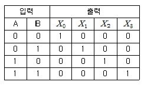
- 디코더
- 인코더
- 멀티플렉서
- 카운터
(정답률: 82%)
10. SCR의 단자 명칭과 거리가 먼 것은?
- gate
- base
- anode
- cathode
(정답률: 89%)
11. 저압 옥내 분기 회로의 분기개폐기 및 자동차단기를 시설하는 개소는 분기점에서 원칙적으로 몇 [m]이내인가?
- 1[m]
- 2[m]
- 3[m]
- 4[m]
(정답률: 92%)
12. 주파수 60[㎐]로 제작된 3상 유도전동기를 동일한 전압의 50[㎐]의 전원으로 사용할 때 나타나는 현상은?
- 자속 감소
- 속도 증가
- 철손 감소
- 무부하전류 증가
(정답률: 77%)
13. 3상 유도전동기의 전전압 기동 토크는 전부하시의 4.8배이다. 전전압의 2/3로 기동할 때 기동토크는 전부하시의 약 몇 배인가?
- 1.6배
- 2.1배
- 3.2배
- 7.2배
(정답률: 57%)
14. 교통신호등의 시설기준으로 틀린 것은?
- 교통신호등 회로의 사용전압은 300[V] 이하이어야 한다.
- 전선을 매다는 금속선에는 지지점 또는 이에 근접하는 곳에 애자를 삽입한다.
- 교통신호등 제어장치의 전원측에는 전용 개폐기 및 전류 차단기를 각 극에 시설한다.
- 신호등회로 인하선의 전선은 지표상 3.5[m]이상이 되도록 한다.
(정답률: 74%)
15. 배리스터(Varistor)를 사용하는 주 목적은?
- 서지전압에 대한 회로의 보호
- 온도보상
- 출력 전류조정
- 전압 증폭
(정답률: 94%)
16. 금속관 공사에 의한 저압 옥내배선에서 사용하는 금속관을 콘크리트에 매설하는 경우 관의 두께는 몇[㎜]이상이어야 하는가?
- 0.5[㎜]
- 0.75[㎜]
- 1.0[㎜]
- 1.2[㎜]
(정답률: 90%)
17. 저압의 지중전선이 지중약전류 전선 등과 접근하거나 교차하는 경우 상호 간의 이격거리가 몇 [㎝]이하인 때에는 지중전선과 지중약전류 전선 등 사이에 견고한 내화성의 격벽을 설치하는가?
- 15[㎝]
- 30[㎝]
- 60[㎝]
- 100[㎝]
(정답률: 85%)
18. 66[kV]의 가공송전선에 있어 전선의 인장하중이 220[kgf]으로 되어있다. 지지물과 지지물 사이에 이 전선을 접속 할 경우 이 전선 접속부분의 전선의 세기는 최소 몇[kgf] 이상이어야 하는가?
- 85[kgf]
- 176[kgf]
- 185[kgf]
- 192[kgf]
(정답률: 68%)
19. 1[H]인 코일의 리액턴스가 377[Ω]일 때 주파수는?
- 약 60[㎐]
- 약 120[㎐]
- 약 360[㎐]
- 약 600[㎐]
(정답률: 67%)
20. 동기발전기를 병렬운전 하고자 하는 경우 같지 않아도 되는 것은?
- .기전력의 임피던스
- 기전력의 위상
- 기전력의 파형
- 기전력의 주파수
(정답률: 84%)
2과목: 임의구분
21. 같은 규격의 축전지 2개를 병렬로 연결하면?
- 전압과 용량 모두 2배가 된다.
- 전압과 용량 모두 1/2이 된다.
- 전압은 그대로, 용량은 2배가 된다.
- 전압은 2배, 용량은 그대로이다.
(정답률: 92%)
22. 일반적으로 공진형 컨버터에 사용되지 않는 소자는?
- Metal-Oxide Semiconductor Field Effect Transistor
- Insulated Gate Bipolar Transistor
- Silicon Controlled Rectifier
- Transistor
(정답률: 65%)
23. 사이리스터가 아닌 것은?
- SCR
- Diode
- Triac
- Sus
(정답률: 67%)
24. 레지스터의 종류가 아닌 것은?
- Instruction register
- Program counter
- Binary register
- Index register
(정답률: 40%)
25. 바닥 통풍형과 바닥 밀폐형의 복합채널 부품으로 구성된 조립 금속구조로 폭이 150[㎜]이하 이며, 주 케이블 트레이로부터 말단까지 연결되어 단일 케이블을 설치하는데 사용하는 트레이는?
- 통풍 채널형 케이블 트레이
- 사다리형 케이블 트레이
- 바닥 밀폐형 케이블 트레이
- 트로프형 케이블 트레이
(정답률: 92%)
26. 지중 케이블의 고장점을 찾아내는 방법은 머레이루프, 발레이루프 시험법이 있는데 이들 시험방법은 어떤 브리지를 원리를 이용하는가?
- 휘이트스토운 브리지(Wheatston bridge)
- 쉐링 브리지(Schering's bridge)
- 윈 브리지(Owen's bridge)
- 임피던스 브리지(Impedance bridge)
(정답률: 86%)
27. 과전류차단기로 시설하는 퓨즈 중 고압전로에 사용하는 포장퓨즈는 정격전류의 몇 배에 견디어야 하는가?
- 1.3배
- 1.5배
- 2.0배
- 2.5배
(정답률: 79%)
28. 전원측 전로에 시설한 배선용 차단기의 정격전류가 몇[A]이하의 것이며 이 전로에 접속하는 단상 전동기에는 과부하 보호 장치를 생략할 수 있는가?
- 15[A]
- 20[A]
- 30[A]
- 50[A]
(정답률: 79%)
29. 무부하에서 자기여자로 전압을 확립하지 못하는 직류발전기는?
- 직권발전기
- 분권발전기
- 복권발전기
- 타여자발전기
(정답률: 69%)
30. 마이크로프로세서의 주소지정방식 중 명령이 오퍼랜드 자체가 실제 데이터로 명령이 인출(fetch)됨과 동시에 깅거 장치의 데이터도 자동 인출되는 것은?
- 간접주소지정방식(indirect addressing)
- 직접주소지정방식(direct addressing)
- 즉시주소지정방식(immediate addressing)
- 상대주소지정방식(relative addressing)
(정답률: 46%)
31. 1차 전압 2200[V], 무부하 전류 0.088[A], 철손 110[W]인 단상 변압기의 자화전류는?
- 50[mA]
- 72[mA]
- 88[mA]
- 94[mA]
(정답률: 51%)
32. 자기회로에 대한 키르히호프의 법칙을 설명한 것으로 옳은 것은?
- 수개의 자기회로가 1점에서 만날 때는 각 회로의 기자력의 대수합은 “0”이다.
- 자기회로의 결합점에서 각 자로의 자속의 대수합은 “0”이다.
- 수개의 자기회로가 1점에서 만날 때는 각 회로의 자속과 자기저항을 곱한 것의 대수합은 “0”이다.
- 하나의 폐자기회로에 대하여 각 분로의 자속과 자기 저항을 곱한 것의 대수합은 폐자기회로에 작용하는 기자력의 대수합과 같다.
(정답률: 62%)
33. 마이크로프로세서의 일반적인 명령어이다. 연관이 틀린 것은?
- CMP-비교
- SUB-감산
- ADD-가산
- AND-논리합
(정답률: 53%)
34. 220[V]의 교류전압을 배전압 정류라 할 때 최대 정류전압은?
- 약 440[V]
- 약 566[V]
- 약 622[V]
- 약 880[V]
(정답률: 72%)
35. 다음 논리식 중 옳은 표현은?
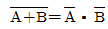
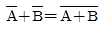
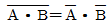
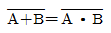
(정답률: 91%)
36. 양수량이 매분 10m3이고, 총양정이 10[m]인 펌프용 전동기의 용량은? (단, 펌프효율은 70[%]이고 여유계수는 1.2라고 한다.)
- 5[kW]
- 20[kW]
- 28[kW]
- 280[kW]
(정답률: 75%)
37. 품셈에서 규정된 소운반이라 함은 몇 [m] 이내의 수평거리를 말하는가?
- 10[m]
- 20[m]
- 30[m]
- 40[m]
(정답률: 74%)
38. 에스컬레이터의 적재하중이 1500[kg], 속도 30[m/min], 경사각 30°, 에스컬레이터의 총효율 0.6, 승객승입률 0.85일 때, 에스컬레이터 전동기의 용량은 약 몇[kW]인가?
- 2.2[kW]
- 5.2[kW]
- 32[kW]
- 64[kW]
(정답률: 55%)
39. 다음 중 ‘무효전력을 조정하는 전기기계기구’로 용어 정의되는 것은?
- 배류코일
- 변성기
- 조상설비
- 리액터
(정답률: 87%)
40. 저항 20[Ω]인 전열기로 21.6[kcal]의 열량을 발생시키려면 5[A]의 전류를 약 몇 분간 흘려주면 되는가?
- 3분
- 5.7분
- 7.2분
- 18분
(정답률: 77%)
3과목: 임의구분
41. 정전압 계통에 접속된 동기발전기는 그 여자를 약하게 하면?
- 출력이 감소한다.
- 전압강하가 생긴다.
- 진상 무효전류가 증가한다.
- 지상 무효전류가 증가한다.
(정답률: 56%)
42. 마이크로프로세서 연산을 단항(unary)연산과 이항(binary)연산으로 구분할 때 단항연산을 표시하는것은?
- complement
- OR
- AND
- 4칙 연산
(정답률: 44%)
43. 회전 전기자형 동기 발전기에서 3상 교류 기전력은 어느 부분을 통하여 출력해 내는가?
- 모선
- 전기자 권선
- 회전자 권선
- 슬립링
(정답률: 83%)
44. 접지극은 지하 몇 [㎝]이상의 깊이에 매설하는가?
- 55[㎝]
- 65[㎝]
- 75[㎝]
- 85[㎝]
(정답률: 88%)
45. 직류전류계의 측정 범위를 확대하는데 사용되는 것은?
- 계기용 변류기
- 영상 변류기
- 분류기
- 배율기
(정답률: 71%)
46. 두 종류 금속을 접속하여 두 접합 부분을 다른 온도로 유지하면 열기전력을 일으켜 열전류가 흐른다. 이 현상을 지칭하는 것은?
- 지벡 효과
- 제3금속의 법칙
- 펠티어 효과
- 패러데이의 법칙
(정답률: 84%)
47. 500[kVA]의 단상변압기 4대를 사용하여 과부하가 되지 않게 사용할 수 있는 3상 전력의 최대값은?
- 약 866[KVA]
- 약 1500[KVA]
- 약 1732[KVA]
- 약 3000[KVA]
(정답률: 84%)
48. 고압수전의 3상 3선식에서 불평형부하의 한도는 단상접속부하로 계산하여 설비불평형률을 30[%]이하로 하는 것을 원칙적으로 한다. 다음 중 이 제한에 따르지 않을 수 있는 경우가 아닌 것은?
- 저압 수전에서 전용변압기 등으로 수전하는 경우
- 고압 및 특고압 수전에서 100[KVA]이하의 단상부하인 경우
- 고압 및 특고압 수전에서 단상부하용량의 최대와 최소의 차가 100[KVA]이하인 경우
- 특고압 수전에서 100[KVA]이하의 단상변압기 3대로 △결선 하는 경우
(정답률: 84%)
49. 전류 순시값 i=30sinwt+40sin(3wt+60°)[A]의 실효값은?
- 약 35.4[A]
- 약 42.4[A]
- 약 56.6[A]
- 약 70.7[A]
(정답률: 49%)
50. 다음 그림은 어떤 논리 회로인가?
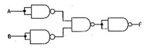
- NAND
- NOR
- exclusive OR(XOR)
- exclusive NOR(XNOR)
(정답률: 75%)
51. CPU가 입·출력 데이터 전송을 메모리에서의 데이터 전송과 같은 명령으로 수행할 수 있는 입·출력제어 방식은?
- Memory mapped I/O
- Programmed I/O
- Isolated I/O
- Interrupt I/O
(정답률: 42%)
52. 3상 변압기의 병렬운전이 불가능한 결선은?
- △-Y 와 Y-Y
- Y-△와 Y-△
- △-Y 와 Y-△
- △-△ 와 Y-Y
(정답률: 92%)
53. 전선이나 케이블의 절연물에 손상 없이 안전하게 흘릴 수 있는 최대 전류는?
- 허용전류
- 상용전류
- 부하전류
- 안전전류
(정답률: 89%)
54. 평행한 콘덴서에 100[V]의 전압이 걸려 있다. 이 전원을 가한 상태로 평행판 간격을 처음의 2배로 증가시키면?
- 용량은 반으로 줄고, 저장되는 에너지는 2배가 된다.
- 용량은 2배가 되고, 저장되는 에너지는 반으로 줄어든다.
- 용량과 저장되는 에너지는 각각 반으로 줄어든다.
- 용량과 저장되는 에너지는 각각 2배가 된다.
(정답률: 54%)
55. 어떤 회사의 매출액이 80000원, 고정비가 15000원, 변동비가 40000원 일때 손익분기점 매출액은 얼마인가?
- 25000원
- 30000원
- 40000원
- 55000원
(정답률: 79%)
56. 다음 중 통계량의 기호에 속하지 않는 것은?
- σ
- R
- s
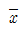
(정답률: 70%)
57. 계수 규준형 샘플링 검사의 OC곡선에서 좋은 로트를 합격시키는 확률을 뜻하는 것은? (단, α는 제 1종과오, β는 제 2종과오이다.)
- α
- β
- 1-α
- 1-β
(정답률: 85%)
58. u관리도의 관리한계선을 구하는 식으로 옳은 것은?
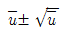
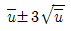
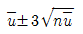
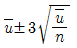
(정답률: 87%)
59. 예방보전(Preventive Maintenance)의 효과로 보기에 가장 거리가 먼 것은?
- 기계의 수리비용이 감소한다.
- 생산시스템이 신뢰도가 향상된다.
- 고장으로 인한 중단 시간이 감소한다.
- 예비기계를 보유해야 할 필요성이 증가한다.
(정답률: 93%)
60. 다음 중 인위적 조절이 필요한 상황에서 사용될 수 있는 워크팩터(Work Factor)의 기호가 아닌 것은?
- D
- K
- P
- S
(정답률: 70%)
I = V / (ωL)
여기서 ω는 각주파수로, 2πf로 구할 수 있습니다. 따라서 주어진 값으로 계산하면 다음과 같습니다.
ω = 2πf = 2π × 60 = 377 [rad/s]
I = 220 / (377 × 314 × 10^-3) ≈ 1.9 × 10^-3 [A]
따라서 정답은 "약 1.9×10^-3[A]"입니다.